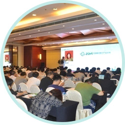
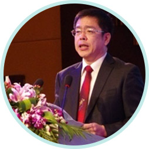
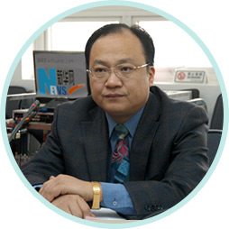
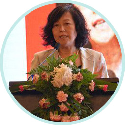

“专家号”平台和地方医疗机构合作的价值和要点
- 是汇集国内顶级医疗专家的移动医疗平台。平台上的专家都具有国内排名前十医院科室副主任以上职称。
- 我们是“中关村移动互联网产业联盟移动医疗专委会”执行机构。“专委会”是由从事移动医疗相关产业的政、医、产、学、研发起成立的，一个跨地区、跨部门、跨所有制的全国性行业组织。
- 《中国健康报》的指定合作伙伴
- 中国数字医疗网是我们的兄弟单位（同为中国最大的IT技术网站51CTO下属）：
 我们举办的活动：
我们举办的活动：
- 2014中国移动医疗产业论坛（会场照片和演讲嘉宾照片）

2014中国移动医疗产业论坛

孟群国家卫计委统计信息中心主任

向东国务院研究室司长

韩晓芳北京市发改委市医改办主任
- 向合作医疗机构输送全国顶级专家资源，免费提供患者跟踪和管理系统。帮助合作单位留住患者、推荐患者、管理患者、跟踪患者就医轨迹，实现合作医疗机构、顶级专家、患者、平台的四方共赢。
- 1.每个地方只选取1-2个合作医疗机构，使合作机构能资源独享，借势营销。
- 帮助医疗机构迅速壮大诊疗实力，留住老患者，吸引新患者。
- 2.免费为早期合作机构提供患者跟踪管理系统，全部数据均向合作机构开放。
- 3.“专家号”平台拥有全部主要科室专家，能为合作机构提供全方位的内、外、妇、儿科服务，包括远程会诊、就地治疗、预约转诊、异地治疗、高端诊疗、科室建设、医务人员培训、举办病例研讨、学术交流等全面服务。
- 4.“专家号”平台给合作医院提供一个唯一的二维码，“专家号”后台可以识别患者来源，相应引导就诊，全部数据向合作机构开放。合作机构做好相应的推广和实施工作。患者情况分四类：
- 较轻，原医院可以继续治疗
- 较重，可以由专家到合作医院治疗
- 很重，需要到更好医院治疗
- 合作机构当地(或附近)的“专家号”用户，可以被引导去合作医院进行初诊、治疗和检验、检查、拍片等...